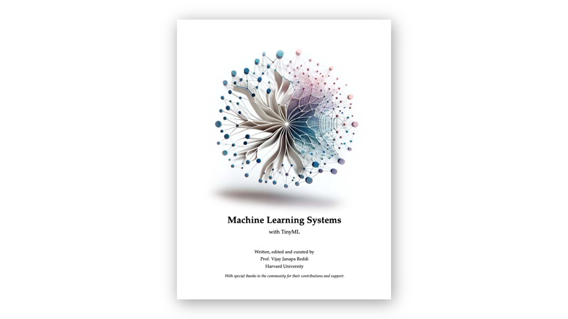

About this Book
This book is part of the open book Machine Learning Systems, which we invite you to read.
Who This Book Is For
This book is designed for makers, students, engineers, and anyone curious about bringing artificial intelligence to embedded devices. Whether you’re new to machine learning or experienced with traditional ML but unfamiliar with embedded systems, the hands-on approach will guide you from setup to deployment.
You should have basic familiarity with Arduino programming and the Arduino IDE. Prior machine learning experience is helpful but not required—each concept is introduced with clear explanations and practical examples.
What You’ll Learn
The book is organized into three main sections, each building on the previous:
XIAOML Kit Projects - The heart of the book, featuring comprehensive hands-on projects:
- Setup: Complete configuration of the XIAO ESP32S3 Sense and XIAOML Kit, testing all sensors and peripherals
- Image Classification: Build a computer vision system to classify objects using convolutional neural networks (CNNs)
- Object Detection: Deploy FOMO (Faster Objects, More Objects) for real-time multi-object detection
- Keyword Spotting (KWS): Create a voice-activated system that recognizes specific spoken commands
- Motion Classification and Anomaly Detection: Use IMU data to recognize gestures and detect unusual patterns
Preprocessing Deep Dive - Understanding the signal processing that makes TinyML work:
- DSP Spectral Features: Master digital signal processing techniques for extracting meaningful features from sensor data
- KWS Feature Engineering: Learn specialized audio processing methods, including MFCC (Mel-frequency cepstral coefficients) and spectrograms
Grove Vision AI V2 - Exploring no-code and accelerated computer vision:
- Setup and No-Code Applications: Deploy pre-trained models without writing code using SenseCraft AI
- Image Classification: Custom model deployment with hardware acceleration
- Object Detection: High-performance object detection on a dedicated AI accelerator
Tools and Platforms
You’ll work extensively with:
- Arduino IDE: Primary development environment for the XIAO ESP32S3 Sense
- Edge Impulse Studio: Cloud-based platform for ML model development, from data collection through deployment
- SenseCraft AI: Seeed Studio’s platform for no-code AI model deployment
- Python notebooks: For advanced preprocessing and data analysis
Hardware Requirements
To follow along with all projects, you’ll need:
- XIAOML Kit (includes XIAO ESP32S3 Sense and expansion board with OLED and an IMU)
- Grove Vision AI V2 (for the final section)
- USB-C cable for programming
- MicroSD card (optional, for data logging)
Project-Based Approach
Every chapter follows the same proven workflow:
- Problem definition: Understanding the application and its constraints
- Data collection: Gathering training data from sensors or datasets
- Feature extraction: Processing raw sensor data into meaningful features
- Model training: Building and training neural networks optimized for edge deployment
- Evaluation: Testing model performance and understanding trade-offs
- Deployment: Uploading trained models to your device and running inference
- Real-world testing: Validating your application with actual sensor data
Learning Philosophy
This book emphasizes learning by doing. Rather than lengthy theoretical discussions, you’ll build working projects that demonstrate core concepts. Code examples are complete and tested, with detailed explanations of key sections. When theory is necessary—like understanding how convolutional layers work or why we use Mel-frequency features for audio—it’s presented in context, connected directly to the project you’re building.
Beyond the Book
By the end, you won’t just have completed several projects—you’ll understand the fundamental principles that apply to any ML application. You’ll know how to:
- Choose appropriate sensors and platforms for your application
- Collect and prepare training data effectively
- Select and configure neural network architectures for embedded constraints
- Optimize models for memory, latency, and power consumption
- Deploy and validate ML models on resource-constrained devices
These skills transfer directly to your own TinyML projects, whether you’re building smart home devices, industrial sensors, wearables, or environmental monitors.